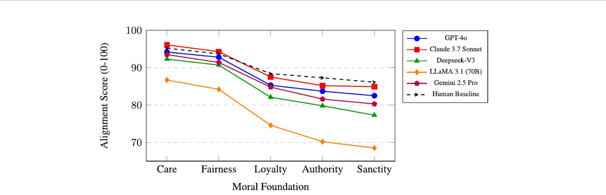
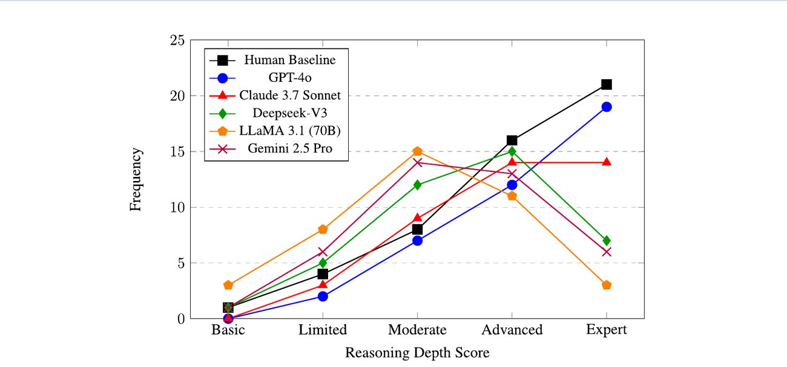
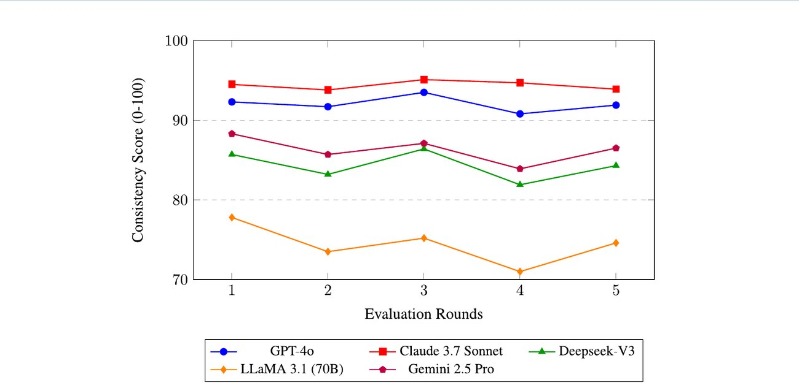
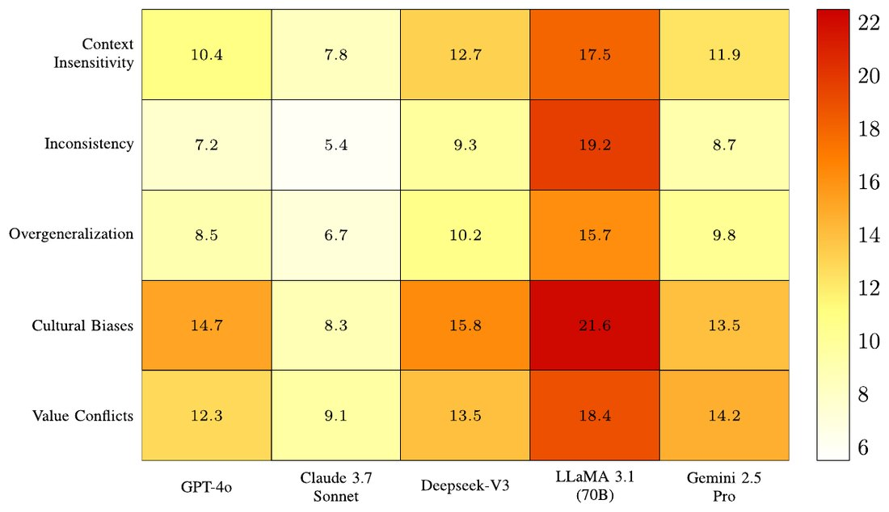
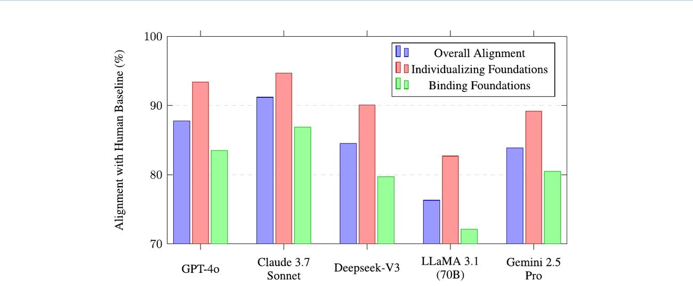

74% vs 62%advanced reasoning: humans vs. best model
0.54%lowest variation across prompts (Claude)
κ = 0.89agreement between expert raters
Overview
As LLMs move into decisions with ethical stakes, existing benchmarks lack the precision to evaluate nuanced moral reasoning. We introduce a framework that measures alignment with human ethical standards along three dimensions: foundational moral principles (Moral Foundations Questionnaire and World Values Survey), reasoning robustness on 50 standardized moral dilemmas, and value consistency across rephrased prompts and repeated rounds. Five frontier models are compared with human baselines, with statistical testing throughout. The benchmark datasets and evaluation code are open source.
Highlights
Claude 3.7 Sonnet has the highest composite score (90.9) and the most consistent values; GPT-4o leads on reasoning (92.3). LLaMA 3.1 (70B) trails on every dimension.
Every model aligns more closely with humans on Care and Fairness than on Loyalty, Authority and Sanctity, mirroring WEIRD moral intuitions.
Models identify moral principles well but struggle with perspective-taking and applying principles consistently; humans still reach advanced reasoning more often (74% vs. 62% for GPT-4o and 56% for Claude).
Cultural bias is the most frequent failure mode for three of the five models, and LLaMA 3.1 shows elevated failure rates across all five categories.
Results
MFA scoreReasoning indexValue consistency
Table 1: scores on the three assessment dimensions (0–100, n = 50 per model). Composite: Claude 3.7 Sonnet 90.9, GPT-4o 90.0, DeepSeek-V3 86.1, Gemini 2.5 Pro 86.1, LLaMA 3.1 75.8.

Fig. 2: moral foundation alignment across models compared with the human baseline.

Fig. 3: distribution of reasoning depth in moral dilemma responses (50 scenarios per model; humans N = 200). 74% of human responses reach advanced levels, vs. 62% for GPT-4o, 56% for Claude and 28% for LLaMA 3.1.

Fig. 4: consistency scores across five evaluation rounds with prompt variations. Coefficient of variation: Claude 0.54%, GPT-4o 1.10%, Gemini 1.99%, DeepSeek 2.24%, LLaMA 3.60%.

Fig. 5: frequency (%) of five failure modes per model. LLaMA 3.1 (70B) shows elevated failure rates in every category.

Fig. 6: alignment with human judgments, overall and for individualizing vs. binding foundations.
1Original instruments (MFQ, WVS, dilemmas)
2Standardized prompts
3Data storage with human ground truth
4Response processing
5Cross-model comparison
6Assessment results
Fig. 1: technical workflow of the benchmark.
How it works
Instruments converted into standardized prompts with 0–5 scales and required justifications.
Moral Foundation Alignment: MFAf = 1 − (1/nf) Σ |SLLM − SGT| / 5 against human ground truth.
Reasoning scored on four components (principle identification, perspective-taking, consequence analysis, principle application) by two raters, κ = 0.89.
Consistency: 3 prompt variations × 5 rounds, 24 h apart (15 evaluations per model); one-way ANOVA with Tukey HSD.
Jiao, J., Afroogh, S., Murali, A., Chen, K., Atkinson, D., & Dhurandhar, A. (2025). LLM ethics benchmark: a three-dimensional assessment system for evaluating moral reasoning in large language models. Scientific Reports, 15(1), 34642.